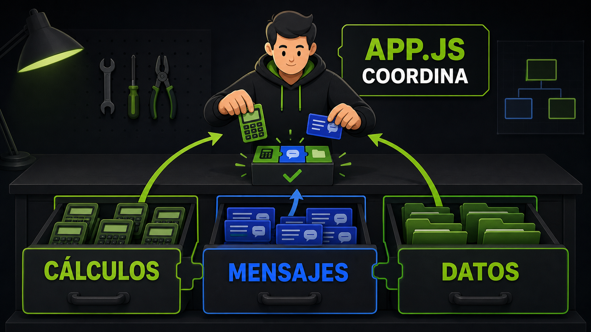
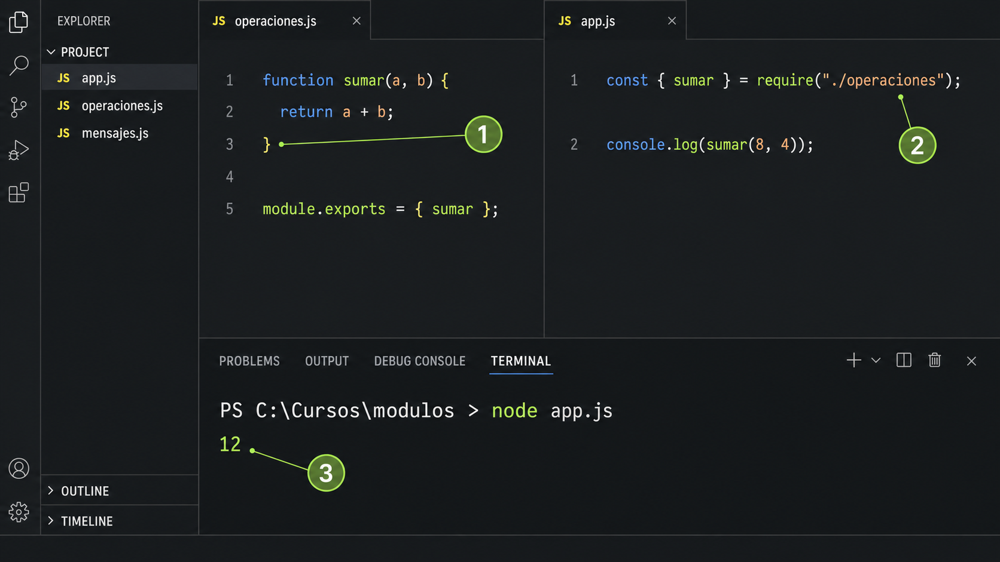

Definir, exportar e importar
Definir
Escribí la función dentro del archivo responsable.
Exportar
Elegí qué podrá utilizar otro archivo.
Importar
Solicitá esa capacidad mediante una ruta.
operaciones.js
function sumar(a, b) { return a + b; }
function duplicar(n) { return n * 2; }
module.exports = { sumar, duplicar };app.js
const { sumar, duplicar } = require("./operaciones");
const total = sumar(8, 4);
console.log(duplicar(total)); // 24
Cómo leer las rutas
Esta carpeta
Busca un archivo vecino.
Una carpeta arriba
Retrocede antes de buscar.
Un paquete
Busca una dependencia o módulo incorporado.
Estructura modular
Árbol del proyecto
gestor-estudiantes/
├── app.js
├── estudiantes.js
├── estadisticas.js
└── mensajes.jsImporta dependencias, ordena pasos e inicia el programa.
Repetir cálculos, construir cada mensaje y concentrar todos los detalles.
COMPROBACIÓN
0/5Mi organización es comprensible
Marcá cada punto después de comprobarlo.